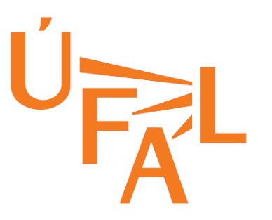

|  | EngVallex 2.0 |
EngVallex (latest version is EngValex 2.0) is a valency lexicon fo English. It has been created as a part of the annotation of the tectogrammatical annotation of the English side of the parallel corpus Prague Czech-English Dependency Treebank (latest version is PCEDT 3.0), which corresponds to the Penn Treebank WSJ corpus (translated to Czech, as part of PCEDT) and annotated in PDT-style. Each occurrence of a verb in the English part of the corpus is assigned a valency frame listed in the EngVallex lexicon, connecting thus the lexicon and the corpus. Each entry in EngVallex is moreover linked to PropBank entries, e.g., for comparison purposes.
EngVallex 2.0 contains 7950 valency frames for 4515 verbs.
EngVallex is now being developed as part of the CzEngVallex and SynSemClass projects, which use EngVallex as its underlying lexicon.
The main page for browsing and searching EngVallex is now available at the LINDAT/CLARIAH-CZ services pages.
If you use the data in your research or need to cite it for any reason, please cite:
For LREC papers (separate language resources references):
@languageresource{lrEngVallex20,
title={EngVallex - English Valency Lexicon 2.0},
author={Cinkov\'{a}, Silvie and Fu\v{c}\'{i}kov\'{a}, Eva and {\v{S}}indlerov\'{a} and Haji\v{c}, Jan},
url = {http://hdl.handle.net/11234/1-3526},
publisher={Institute of Formal and Applied Linguistics, LINDAT/CLARIAH-CZ, Charles University},
address={Prague, Czech Republic},
lindat={http://hdl.handle.net/11234/1-3526},
year={2021} }
For general papers and citations:
@misc{EngVallex20,
title={EngVallex - English Valency Lexicon 2.0},
author={Cinkov\'{a}, Silvie and Fu\v{c}\'{i}kov\'{a}, Eva and {\v{S}}indlerov\'{a} and Haji\v{c}, Jan},
url = {http://hdl.handle.net/11234/1-3526},
note = {{LINDAT}/{CLARIAH-CZ} digital library at the Institute of Formal and Applied Linguistics ({{\\'U}FAL}),
Faculty of Mathematics and Physics, Charles University},
copyright={Creative Commons - Attribution-{NonCommercial}-{ShareAlike} 4.0 International ({CC} {BY}-{NC}-{SA} 4.0)},
year={2021} }
For "plaintext" reference:
(Cinková et al., 2021)
Cinková Silvie, Fučíková Eva, Šindlerová Jana, Hajič Jan: EngVallex - English Valency Lexicon 2.0. Data/software, LINDAT-CLARIAH-CZ, URL: http://hdl.handle.net/11234/1-3526, 2021.
For footnote references, the following is sufficient in LaTeX papers:
\url{http://hdl.handle.net/11234/1-3526}